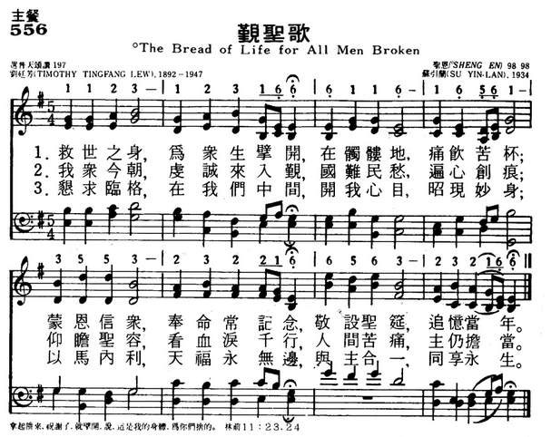
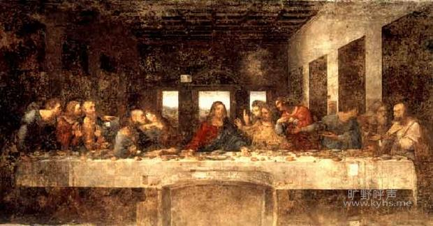

|
|
556觐圣歌 |
|
|
|
|
https://www.mred365.cn/szxg/7559.html
 |
|
|
|
|

詩歌賞析:
第165首
擘开生命饼歌*
经文：“耶稣拿着这五个饼，两条鱼，望着天祝福，擘开饼，迸给门徒，摆在众人面前，……他们都吃，并且吃饱了”(可6：41—42)．
1934年《普天颂赞》在编辑过程中，刘廷芳博士在翻译了美国拉思伯里 (事略参阅第
154首)所写的《永生之言歌》后,按该诗的格律另写了一首圣诗。现先介绍作者刘廷芳的生平事略，然后再比较两诗的内容。
刘廷芳 (英文名作Timothy
Ting—fang Liu，1892一1947)生于浙江温州，于上海圣约翰大学毕业后留学美国，在纽约哥伦比亚大学得硕士学位，又在雅礼大学得神学学士学位，是纽约协和神学院研究生。192O年回国，在北京师范大学、燕京大学任教，并接受牧师圣职，同时任《真理与生命》、《紫晶》杂志编辑，从事写诗著文工作
。1926一 1928年再度赴美，在美国几个大学和中学讲学。奥柏林大学赠送他荣誉神学博士学位。l932年起，任《普天颂赞》编辑委员会主席，兼文字支委员会主席。经他修订的翻译圣诗多达一百九十余首。另有他的创作圣诗六首。这首《擘开生命饼歌》和第37O首《新天新地歌》都是他的创作新诗。
刘廷芳曾多次代表我国教会出席国际的基督教会议。他在燕京大学任教时期，十分同情、支持当时的学生爱国运动。1941年应美国新墨西哥大学之聘前往美国任教，并在各地讲学，1947年卒于新墨西哥城的阿尔伯克基城。
现在再将刘廷芳的诗与拉思伯里的诗并列如下作个比较：
《擘开生命饼歌》
《生命之饼》或《永生之言歌》
一、擘开生命的饼，
一、擘开生命的饼，
颁赐吾人，
充我灵饥，
如主当初擘饼，
正如海畔当年，
加利利滨；
引众归依；
我愿洗心涤虑，
我愿努力穷尽，
与主相亲，
来覲圣颜；
求主赐我圣粮，
寸心迫切思慕，
饱我心灵。
生命之言。
二、谢主生命之饼，
二、昭示永生真理，
颁赐吾人，
使我遵循，
谢主所流宝血，
正如当年祝饼，
救赎众生；
加利利滨；
为主神圣牺牲，
从兹锁链脱身，
我得自由，
束缚无存，
与主同结团契，
真理赐我自由，
万古千秋。
安乐永�琚C
《普天颂赞》(旧版)第 196首
《普天颂赞》(旧版)第 177首

以上两首诗虽然都提到“擘开生命之饼”，但其主题完全不同，刘诗指的是圣餐，拉氏指的却是圣言
(圣经)。拉氏的诗原是为美国纽约州桥头洼集会所开办的高级研究班的班歌。由舍温
(事略参阅第
154首)作曲。《普天颂赞》将原来的诗曲配合在一起，而《新编》则采用舍温这曲配到刘廷芳的诗。
刘廷芳很重视圣餐典礼，在《普天颂赞》内还有一首《觐圣歌》(
《普天颂赞》(旧版)197首)，歌词如下：
一、救世之身，为众生擘开，在骷髅地，痛饮苦杯；
蒙恩信众，奉命常纪念，敬设圣筵，追忆当年。
二、吾众今朝，虔诚来入覲，国难民愁，遍心创痕，
仰瞻圣容，看血泪千行，人间苦痛，主仍担当。
三、恳求临格，在我们中间，开我心目，昭现妙身；
以马内利，天福永无边，与主合一，同享永生。
该诗出版后由前来华英国行道会 (见第 160首注①)传教士铁逊坚(Taylor)译为英文，于 1951年被英国广播公司和苏格兰教会的圣诗集收入，是为国人创作圣诗被外国圣诗采入的第一声。以后又于
1964年被选人美国卫理公会赞美诗，配上前燕京大学音乐系毕业生、范天祥 (事略参阅第31首)的高足苏引兰 (1915-1937)的曲，调名为《圣恩调》，
《新编》中第199首的《清心调》也是苏引兰所谱的。
受难节默想：《擘开生命饼歌》
牧师：陈丰盛
擘开生命的饼，颁赐吾人，
如主当初擘饼，加利利滨；
我愿洗心涤虑，与主相亲，
求主赐我圣粮，饱我心灵。
谢主生命的饼，颁赐吾人，
谢主所流宝血，救赎众生；
为主神圣牺牲，我得自由，
与主同结团契，万古千秋。
据王神荫主教的介绍，本诗是刘廷芳在编辑《普天颂赞》的过程中，在翻译了美国拉思伯里所写的《永生之言歌》后，按该诗的格律另写的一首圣诗。这首诗被收录在《普天颂赞》第196首。而刘氏很重视圣餐礼仪，在《普天颂赞》中又收录他的另一首诗歌，题为《觐圣歌》（第197首）。《赞美诗（新编）》只收录其《擘开生命饼歌》在第165首。
刘廷芳（TimothyTingfangLew，1891-1947）字亶生，祖籍浙江永嘉，生于1891年（清光绪十七年），为20世纪中国教会著名领袖，集神学家、教育家、心理学家、作家、诗人、圣诗翻译家于一身。从圣约翰大学附属中学毕业后，于1911年赴美留学，先后获得哥伦比亚大学获得大学士(B.A.)和硕士学位(M.A.)、耶鲁神学院神道学学士学位(B.D.)、哥伦比亚大学师范学院哲学博士学位（主修教育与心理学，Ph.D.）。1920年，刘廷芳回国，分别任北京师范大学研究院院长，北京大学心理学教授，燕京大学神学院神学教授。1921-1926年，任燕京大学宗教学院院长，燕京大学校长助理。1925年3月19日，在北京协和医院，他协助主持孙中山先生的基督教丧礼。
刘廷芳分别任《生命》、《真理周刊》、《真理与生命》等刊物的主编，又独自创办基督教文艺刊物《紫晶》。刘廷芳于1932年担任联合圣歌编辑委员会主席兼文字支委会主席，主编《普天颂赞》。1936年，刘廷芳出任国民z
/-府立法委员。1937年，刘氏参加在牛津及爱丁堡举行之世界基督教教务大会及基督教信条与教政大会，并参加在巴黎举行的国际心理学会。1938年去印度但白伦参加国际传道会议。1941年因故疾赴美就医，1947年8月2日病逝于美国新墨西哥州（NewMexico）艾尔布克市（Albuquerque）之长老会医院。
作为编辑委员会主席的刘廷芳，对《普天颂赞》的问世，有着不可否认的功劳。在整本《普天颂赞》中，共收录刘廷芳译著的诗歌170首，其中翻译的有164首、创作6首，占全部诗歌的三分之一。刘廷芳在1947年8月2日去世之后，《天风周刊》登载了追悼文章，不同作者在其中都不谋而合地追溯到他在《普天颂赞》编辑过程中的贡献。赵紫宸在其〈吊故友刘先生廷芳〉一诗中总结：“颂赞普天宏教旨，发挥真理坐书林”[1]。崔宪详在〈悼刘廷芳先生〉一文中说：“刘先生另一项对于中国教会的伟大贡献，便是六公会——中华基督教会、中华圣公会、美以美会、华北公理会、中华浸礼协会、监理会——组织联合圣歌委员会出版的‘普天颂赞’。这部巨制的选歌、制谱、修词、编辑等、确乎非常不易，当时六公会所派委员虽皆一时知名之士，而刘先生于一九三二年后在其中担任编辑委员会主席兼文字支委会主席，运用他的优美文学与音韵天才，贡献独多，参加的成绩特别卓异，为众共仰，有口皆碑。”[2]
同乡及好友朱维之先生在其〈中国基督教文化界一大损失——悼刘廷芳博士〉中视《普天颂赞》为基督教在五四运动之后的最大文学贡献之一。他说：“基督教在五四运动以前的最大文学贡献是‘新旧约全书’官话和合译本底完成；而基督教在五四以后最大的文学贡献便是‘普天颂赞’底完成。前者是白话新文学底先驱，后者是新的合乐诗歌底普遍化。若有人问起基督教对中国文学有什么贡献时，我首先便要拿出‘官话和合’译本圣经和‘普天颂赞’。”[3]他肯定《普天颂赞》正是“刘先生对于中国圣歌的大贡献，对于中国基督教文学的大贡献，也就是他对于中国基督教文化建树上的丰功伟业。”[4]
《擘开生命饼歌》是刘廷芳不多的圣诗创作之一。作为当时中国基督教界自由派神学家的代表人物之一，刘廷芳在圣诗作品中倾注了其对信仰的虔诚。这种虔诚的信仰是受中国内地会的影响，从祖母所传承下来，在母亲的教诲中成长。
诗歌是用祈祷的方式来追溯主耶稣设立圣餐，诗人将我们带回到主耶稣受难前的那个晚上。在马可楼房之上，主耶稣洗完十二门徒的脚之后，门徒们围坐在主耶稣旁边。马太描述说：“他们吃的时候，耶稣拿起饼来，祝福，就掰开，递给门徒，说，你们拿着吃，这是我的身体。又拿起杯来，祝谢了，递给他们，说，你们都喝这个。因为这是我立约的血，为多人流出来，使罪得赦。”（太26：26－28）
诗人在第一节祈祷说：
“擘开生命的饼，颁赐吾人，如主当初擘饼，加利利滨；
我愿洗心涤虑，与主相亲，求主赐我圣粮，饱我心灵。”
祈祷不仅仅是一种追溯，更是对主“生命的饼”的渴慕。诗人愿意“洗心涤虑，与主相亲”，这正是所有领受主的圣餐之人需要在自洁的。诗人愿意预备自己的心灵，预备领受主的圣粮，以饱心灵的饥渴。
第二节，诗人发出感恩的赞美：
“谢主生命的饼，颁赐吾人，谢主所流宝血，救赎众生”。
简单的几句祈祷，将主耶稣的救赎表达得淋漓尽致，救赎的意义，在主所设立的圣餐中完全体现出来。所有领受主恩之人，都需要发出感恩的祈祷。最后，诗人又将主救赎在个人身上的功效表达出来：“为主神圣牺牲，我得自由，与主同结团契，万古千秋。”得主救赎之人在生命中得到自由，在灵性上与主联合，结成“万古千秋”的团契。在此值得一提的是，“团契”一词英文为“Fellowship”，将它翻译成为今日通用的“团契”，正是刘廷芳牧师的首创。
在此纪念主耶稣受难的日子里，我们用已故多年的圣徒刘廷芳牧师的诗来分享，一方面靠主“洗心涤虑，与主相亲”，另一方面则在主的救赎中结成“圣徒相通”的团契。我们相信，这就是圣餐的记念之意，也是圣餐中圣徒团契的美好。
2013年3月28日星期四
【牧师简介】陈丰盛，牧师，曾出版《诗化人生——刘廷芳博士生平逸事》一书。